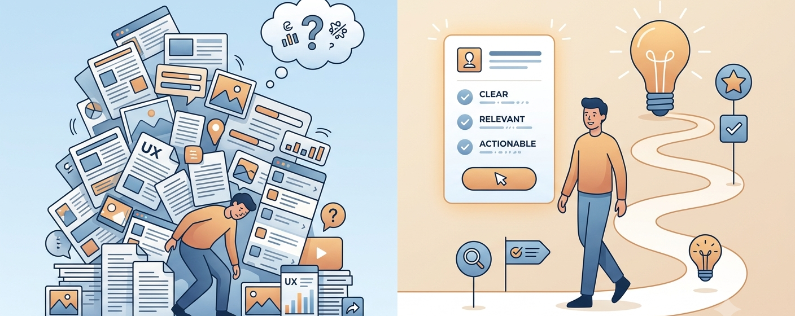
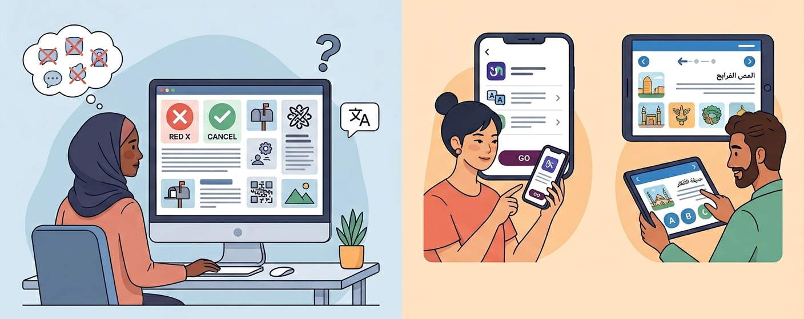
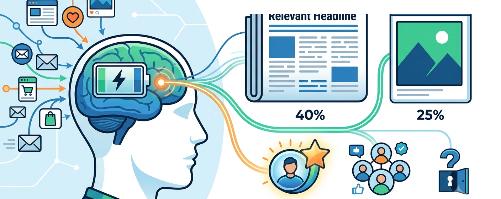
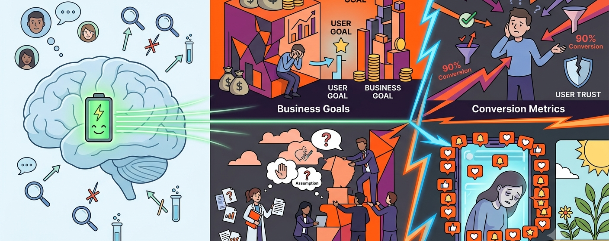
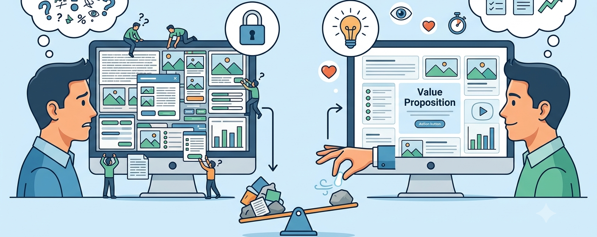

Designing for Humans, Not Assumptions
User Experience (UX) is often perceived as the science of making interfaces intuitive. Yet, beneath every click, scroll, and conversion lies a less predictable force: cognitive bias.
Cognitive biases are mental shortcuts that help people make decisions quickly. While they improve efficiency, they also distort perception, attention, and judgment. For UX professionals, understanding these biases is not merely an advantage—it is a necessity.
The Myth of "More Content Is Better"

One of the most common biases among designers and stakeholders is the curse of knowledge—the assumption that users need the same level of information that creators possess.
Research consistently shows that users rarely read web pages word-for-word; instead, they scan for cues that indicate relevance. Most visitors spend less than a minute on a page and consume only a fraction of the available content. The challenge is therefore not adding more information, but presenting the right information at the right moment.
A common UX mistake is mistaking information quantity for information value. Users generally seek:
- Immediate answers
- Clear benefits
- Trust signals
- Next actions
Anything beyond these must justify its presence.
Cultural Bias: One Interface Does Not Fit the World

Design trends often emerge from specific regions and are mistakenly treated as universal standards.
However, color perception, visual density, and aesthetic preferences vary significantly across cultures.
| Region |
Common Preference |
| N America & N Europe |
Minimalist layouts, ample whitespace |
| East Asia |
Information-dense interfaces with richer visual hierarchy |
| Middle East |
Bold typography and vibrant color combinations |
| India |
High-information environments with strong visual cues |
Designers frequently suffer from false consensus bias—the belief that users elsewhere think and behave similarly to themselves.
Global UX requires localized research, not localized translations.
What Makes Users Stop and Read?

Human attention is limited. Cognitive psychology suggests that users pause when information appears relevant, novel, or visually prominent.
A simplified representation of attention drivers is shown below:
User Attention Drivers
- Relevant Headline : 40%
- Visual/Image : 25%
- Personal Benefit : 18%
- Social Proof : 10%
- Curiosity Gap : 7%
This aligns with eye-tracking studies showing that users gravitate first toward headlines, text blocks, and meaningful imagery rather than decorative elements.
The implication is straightforward: visual hierarchy should amplify relevance, not decoration.
Where UX Often Lacks Empathy

Empathy is frequently celebrated as the foundation of UX, yet many interfaces reveal its absence.
UX loses empathy when it prioritizes:
- Business goals over user goals
- Conversion metrics over user trust
- Assumptions over research
- Engagement over well-being
The rise of dark patterns—interfaces intentionally designed to manipulate user behavior—illustrates how cognitive biases can be exploited rather than respected. Such practices may improve short-term metrics while eroding long-term trust.
Empathetic design asks a simple question:
"Is this helping the user make a better decision, or merely helping the business achieve one?"
The Quiet Power of Whitespace

Whitespace is often misunderstood as unused space. In reality, it is one of the most effective tools for reducing cognitive load.
When interfaces become visually dense, users must expend additional mental effort to distinguish priorities. Appropriate spacing improves readability, comprehension, and navigation while guiding attention toward important content.
However, whitespace is not a universal remedy.
Too little whitespace creates clutter.
Too much whitespace can make information discovery inefficient.
Effective UX balances content density with visual breathing room. The objective is not minimalism; the objective is clarity
Final Thoughts
Cognitive bias reminds us that users are not perfectly rational decision-makers. They scan instead of read, interpret colors through cultural lenses, focus on what stands out, and make judgments within seconds.
The role of UX is not to eliminate these biases but to design responsibly around them.
The most successful interfaces are not those that demand attention. They are those that understand how human attention works in the first place.
Why Users Stay, Engage, and Eventually Buy
In digital products, conversion is often treated as a transactional outcome.
- A user signs up.
- A trial becomes a subscription.
- A visitor becomes a customer.
Yet the strongest conversions rarely happen because of a pricing page alone. They happen because users feel progress before they feel commitment.
This is where gamification becomes powerful.
Gamification is not about making products look like games. It is the strategic use of behavioral triggers—progress, rewards, achievements, challenges, and feedback loops—to encourage engagement and shape decision-making.
When designed correctly, gamification transforms passive users into active participants. More importantly, it helps bridge the critical gap between a pilot user and a paying customer.
From Pilot User to Potential Customer
Most digital products face the same challenge:
- Users sign up.
- Users explore.
- Users leave.
The problem is rarely functionality.
The problem is the absence of momentum.
Gamification introduces a sense of movement during onboarding. Progress bars, achievement badges, onboarding milestones, streaks, and unlockable features create psychological investment before monetary investment.
Products like Duolingo, Notion, Fitbit, and Trello have demonstrated how visible progress mechanisms can increase user retention and feature adoption.
Research suggests that gamified environments strengthen behavioral intention and user engagement by amplifying intrinsic motivation such as curiosity and enjoyment.
Users who experience progress are more likely to complete onboarding journeys because abandoning the process feels like abandoning earned progress.
This phenomenon is often called the completion principle.
The Psychology of Achievement
One of the most overlooked aspects of UX is the human desire for achievement.
- People enjoy completing tasks.
- People enjoy measurable progress.
- People enjoy evidence of growth.
This is not merely emotional—it is neurological.
Achievement systems trigger reward responses in the brain, reinforcing behaviors that led to the accomplishment.
A study examining digital achievements found that achievement systems improved user performance, persistence, and motivation over time, particularly when achievements were meaningful rather than excessive.
The most effective gamification systems therefore focus on:
- Progress visualization
- Milestone recognition
- Skill mastery
- Personalized goals
- Constructive feedback
Poor gamification rewards activity.
Good gamification rewards growth.
Biomimicking Human Behavior
Gamification succeeds because it mirrors patterns already present in nature and human psychology.
This concept can be viewed through the lens of behavioral biomimicry—designing systems that imitate natural human reward cycles.
Humans are biologically conditioned to seek:
- Progress
- Exploration
- Recognition
- Social belonging
- Mastery
Games did not invent these motivations.
They simply structured them.
Digital products borrow these natural mechanisms by creating feedback loops that resemble real-world achievement systems.
Consider:
| Natural Behavior |
Gamified Equivalent |
| Learning a skill |
Levels |
| Social recognition |
Badges |
| Career growth |
Progress bars |
| Competition |
Leaderboards |
| Goal completion |
Achievement unlocks |
The closer a system aligns with natural motivational patterns, the more intuitive it feels.
Users rarely perceive these mechanisms as persuasion.
Instead, they perceive them as progress.
The Conversion Metrics Behind Gamification
The impact of gamification is measurable.
Several studies and industry datasets have demonstrated notable improvements in engagement and conversion metrics.
A large-scale analysis of more than 6 million popup interactions found that gamified experiences such as "spin-to-win" interfaces generated conversion rates over 10 times higher than standard lead-capture experiences.
Another analysis covering 779 million widget impressions reported:
| Experience Type |
Click-through Rate |
| Standard Offer Popup |
9.6% |
| Gamified Offer Popup |
23.8% |
Gamified signup experiences also produced substantially higher form completion rates compared to traditional forms.
While these figures vary by industry, one trend remains consistent:
Interactivity reduces friction.
Users are more likely to participate when actions feel rewarding rather than transactional.
The Role of Dopamine — and Why It Is Often Misunderstood
Gamification discussions frequently mention dopamine.
However, dopamine is not the "pleasure chemical" many assume it to be.
It is more accurately associated with anticipation and motivation.
Users experience dopamine spikes not only when receiving rewards, but while expecting them.
This explains why:
- Progress bars increase completion rates
- Streak systems encourage daily return visits
- Mystery rewards increase engagement
- Achievement systems improve persistence
Recent research examining gamification and customer loyalty highlights the role of reward anticipation in strengthening long-term engagement and brand attachment.
The anticipation of achievement often becomes more motivating than the achievement itself.
Where Gamification Fails
Despite its effectiveness, gamification is frequently misunderstood. Many organizations implement points, badges, and leaderboards without improving the underlying user experience.
This creates what researchers describe as extrinsic dependency.
Users engage for rewards rather than value. Once rewards disappear, engagement collapses.
Studies have shown that poorly implemented gamification can distract users from core objectives and even reduce meaningful engagement.
The objective should never be to manipulate behavior. The objective should be to support motivation that already exists.
Designing for Sustainable Conversion
The future of gamification is moving beyond superficial rewards.
Modern UX increasingly focuses on:
- Autonomy
- Mastery
- Purpose
- Personal growth
- Meaningful progress
Users do not remain loyal because they earned points. They remain loyal because the product helped them achieve something valuable. The strongest conversion strategy is therefore not persuasion.
It is progress.
Final Thoughts
Gamification succeeds because it aligns technology with human psychology. It transforms onboarding into exploration. Progress into motivation. Achievement into retention.
Usability is Aging Faster Than Humans: Why the Next Generation of UX Standards Must Evolve with Human Behavior
Abstract
For over three decades, usability and accessibility have been guided by principles that have fundamentally improved digital experiences. From Nielsen's heuristics to ISO 9241, Fitts' Law, Hick's Law, and the Web Content Accessibility Guidelines (WCAG), these frameworks were established through rigorous empirical research and remain indispensable foundations of Human-Computer Interaction (HCI).
However, an important question deserves greater attention:
Are we evaluating modern interfaces using assumptions about human behavior that no longer fully reflect how humans interact with technology?
This paper does not argue that usability principles are obsolete. Instead, it argues that the human baseline upon which many of these principles were validated has shifted. Continuous exposure to smartphones, algorithmically curated interfaces, AI-assisted workflows, and high-density information environments has altered perceptual habits, scanning strategies, cognitive expectations, and interaction patterns.
Consequently, the next evolution of usability should focus not only on improving interfaces but also on re-evaluating the humans interacting with them.
The Human Has Changed More Than the Interface
Traditional usability research emerged when users primarily interacted with desktop computers through keyboard-and-mouse paradigms. Information density was limited, interfaces were comparatively static, and users learned software rather than expecting software to adapt to them.
Today's users operate in a vastly different cognitive environment.
An average digital day involves rapidly switching between messaging applications, social media feeds, AI assistants, productivity software, streaming platforms, and navigation systems. Information is consumed continuously rather than sequentially. Users routinely scan, ignore, prioritize, and retrieve information at speeds that would have been considered cognitively demanding two decades ago.
This does not necessarily imply that human cognitive capacity has biologically increased.
Rather, interaction behaviour has adapted.
The distinction is critical.
Just as experienced drivers process traffic differently from new drivers without possessing different eyesight, experienced digital users process interface information differently without possessing fundamentally different cognition.
Usability research should increasingly acknowledge this adaptation.
Is White Space Always Better?
Minimalism became synonymous with usability for understandable reasons.
Generous whitespace improves visual hierarchy, reduces cognitive load, enhances readability, and supports accessibility.
These findings remain valid.
However, many modern enterprise products intentionally violate these conventions.
- Trading platforms.
- Healthcare dashboards.
- Security operation centers.
- Industrial monitoring software.
- Modern IDEs.
Professional users consistently prefer dense interfaces because density minimizes navigation and increases information availability.
This raises an interesting research question.
Should information density be optimized for expertise rather than universally minimized?
Today's users have become remarkably efficient at visual filtering.
Years of interacting with mobile notifications, social feeds, search results, and dashboard interfaces have trained users to extract relevant information from visually crowded environments.
High-density layouts are no longer automatically synonymous with poor usability.
Instead, usability may increasingly depend on whether density matches user expertise and task frequency.
The question therefore shifts from:
"How much whitespace is ideal?"
to
"For whom is this amount of whitespace ideal?"
Smartphones Have Quietly Retrained Human Vision
One of the most significant yet understudied behavioural shifts has been produced by smartphones.
Users now locate information inside:
- Tightly packed notification panels
- Compact navigation menus
- Miniature icons
- Stacked cards
- Dense application settings
- Infinite scrolling feeds
The human visual system has become increasingly optimized for rapid micro-search tasks.
Users rarely read interfaces linearly anymore.
They skim. They predict. They pattern-match. They ignore.
Eye-tracking research has long demonstrated scanning behaviours such as the F-pattern and layer-cake reading. Yet modern interfaces increasingly encourage fragmented attention, contextual search, and recognition-based navigation rather than deliberate reading.
This behavioural evolution deserves renewed empirical investigation rather than continued reliance on interaction models established before smartphones became ubiquitous.
Usability Is Becoming Generational
One of the largest assumptions in usability testing is that participants represent "users."
Increasingly, this assumption is insufficient.
Generation Z has grown up with touchscreens, predictive interfaces, recommendation engines, conversational AI, and infinite scrolling.
Millennials experienced the transition from desktop computing to mobile-first ecosystems.
Generation X often developed interaction habits around hierarchical navigation and structured information architecture.
Older adults frequently demonstrate different trust models, navigation expectations, and mental models for digital systems.
These are not merely demographic differences.
They are differences in learned interaction behaviour.
Emerging research on human-AI interaction already demonstrates measurable generational differences in how users perceive, trust, and anthropomorphize AI systems.
If interaction with AI varies by generation, it is reasonable to hypothesize that broader usability behaviours may also vary significantly.
Future usability studies should therefore report participant generations with the same importance currently given to age, gender, expertise, and accessibility needs.
Accessibility Must Expand Beyond Compliance
Accessibility has traditionally focused on ensuring that users with disabilities can perceive, operate, understand, and robustly interact with digital systems.
These goals remain essential.
However, AI introduces a different challenge.
Interfaces are no longer static. They adapt. They generate. They explain. They converse.
Accessibility therefore becomes dynamic rather than deterministic.
Recent accessibility research evaluating AI-generated interfaces found substantial WCAG violations as well as numerous cognitive accessibility issues, highlighting that traditional compliance alone is insufficient for evaluating AI-driven experiences.
Future accessibility evaluation may therefore require measuring not only compliance but also:
- Adaptability
- Explainability
- Conversational clarity
- Trust calibration
- Cognitive predictability
- Interaction resilience
These qualities extend beyond current guideline-based evaluation.
AI Changes What "Usability" Means
Traditional software behaves predictably. AI systems behave probabilistically.
Two users may receive different answers to identical questions. Interfaces increasingly personalize themselves. Workflows evolve during usage. Content becomes generated instead of predefined.
Consequently, classical usability metrics such as task completion time and error rate remain important but become insufficient.
Emerging HCI literature increasingly proposes evaluating trust, collaboration quality, adaptation, transparency, and human-AI partnership rather than interface efficiency alone.
Usability is gradually shifting from evaluating interfaces toward evaluating relationships between humans and intelligent systems.
Rethinking the Research Methodology
The strongest argument of this paper is methodological rather than philosophical.
Much of HCI still attempts to answer contemporary questions using historical participant assumptions.
Future usability research should routinely document variables such as:
- Generation
- AI familiarity
- Smartphone-first versus desktop-first upbringing
- Digital multitasking behaviour
- Information density tolerance
- Interaction expertise
Similarly, accessibility research should expand beyond disability categories and include evolving digital behaviours that influence cognitive interaction.
These variables should not replace existing methodologies.
They should complement them.
Conclusion
Usability has always been centred on understanding humans.
Ironically, as technology has accelerated, the human participant has become the least frequently questioned variable in many usability studies.
The principles that transformed UX over the past thirty years remain valuable.
What deserves reconsideration is not the principles themselves but the assumptions about the people those principles were designed for.
The next frontier of usability research may therefore be surprisingly simple:
Before redesigning interfaces, we must first re-evaluate the humans using them.
Only then can usability standards evolve at the same pace as human behaviour.
References
- ACM SIGACCESS. Can Generative AI Create Accessible Websites? (2025).
- ACM Transactions on Interactive Intelligent Systems. AI Can See What You Can't See: How LLM-Agents Complement Human-Based Gender-Inclusive Usability Testing (2026).
- Frontiers in Cognition. Age and Generational Differences in Anthropomorphism and Trust in Large Language Models (2026).
- Proceedings of the ACM on Software Engineering. Enhancing Web Accessibility: Automated Detection of Issues with Generative AI (2025).
- Information (MDPI). Towards Designing a Set of Usability and Accessibility Heuristics Focused on Cognitive Diversity (2024).